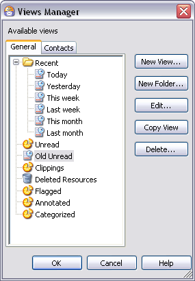
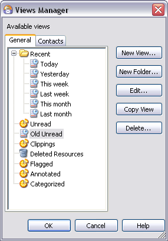

Views Manager Dialog
You can access this dialog from the main menu: Tools | Views Manager or right-click any item in the Views and Categories pane and choose Views Manager on the context menu
This dialog is a point which provides you with central control on Views; you can create new Views, edit the criteria of existing Views (including the default Views which exist in Omea ReaderOmea Pro), copy and delete existing Views, and create View Folders. The dialog lists all of the currently defined Views.
For more information about Views, see Organizing Using Views.
 

The Views Manager dialog
Dialog Components
Available Views Tabs
Shows all currently defined Views grouped in tabs — General, Contacts, and Tasks.
Click the appropriate tab and select a View to edit, copy or delete it. Or create a new folder to add the existing or new Views to it.
Please note that the Views and View Folders you create and existing Views are visible in all Workspaces you have in Omea ReaderOmea Pro.
General Tab
Contains a list of basic types of Views. These are recent Views, Clippings, Flagged, Annotated and Categorized Views and Deleted Resources.
Contacts Tab
Contains a list of available Views for Contacts. By default, it contains All and Active Views for Contacts but you may create a View for your ICQ or Miranda Contacts or other Views. To do so, create a new View and specify Contact is in ICQ Contacts as a condition (Click Add, select Contact is in Address Book, click the address book hyperlink and select ICQ Contacts).
Tasks Tab
Contains a list of available Views which will allow you to view your tasks based on some specific criteria, but you can also create the Views for Tasks which correspond to your own needs. Say these can be Views for tasks which you have different priority (high, normal, low) or you can create a View called “Tasks this month ” which will contain all tasks you have to fulfill during the current month.
Dialog Buttons
New View
Launches the New View dialog in which you can define the search conditions and exceptions for a new View.
New Folder
Launches the Enter Name of a View folder dialog where you need to specify the folder name. Once you have created a new View Folder, you can either create new Views in it or drag the existing Views and drop it into the View Folder.
Edit
Launches the Edit View dialog in which you can add, delete, or modify the search conditions and exceptions for the View currently selected in the Available Views list.
Copy View
Creates a copy of the currently selected View. Use this possibility to copy your Views and then edit them without need to specify conditions and exceptions from the scratch.
For example, you have a View for a certain newsgroup which shows items which appeared in this very newsgroup Today (called “Omea Pro”), but you may want to have such View for a different newsgroup.
To create a new view:
- Select “Omea Pro” View, and press Copy View.
The new View appears in the list of available Views. - Select the new View and press Edit.
- In the Edit View dialog which opens, click the newsgroup hyperlink in the list of conditions.
- In the Select Newsgroup dialog which opens, select a different newsgroup and click OK.
- Rename the View and save the resulting View by clicking Save and Close.
For example, you have a View for Tasks which is called Due This Week, but you may want to have a View where you can access all your tasks which are due this month.
To create a new view:
- Select “Due This Week” View, and press Copy
View.
The new View appears in the list of available Views. - Select the new View and press Edit.
- In the Edit View dialog which opens, click This week hyperlink in the list of conditions.
- In the Edit Time Span dialog which opens select “For” and from the drop-down list select “This Month” and click OK.
- Rename the View and save the resulting View by clicking Save and Close.
Delete (button)
Deletes the View currently selected in the Available Views list.
OK (button)
Applies all additions, changes, and deletions to all Views that you may have made while the dialog was open, and closes the dialog.
Cancel (button)
Rolls back all additions, changes, and deletions to all Views that you may have made while the dialog was open, and closes the dialog.